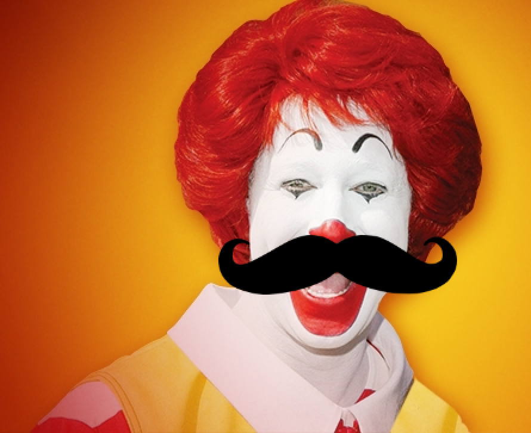

Tash Me!

We are going to make a program that allows us to put a mustache onto a person’s face!
- Create a new Processing sketch and add setup() and draw() methods.
- Find a photo of a face, it can be anyone you want:
- Find an image on google
- Right click on the image and select "Save Image As"
- Rename your image something short (e.g. "friend")
- Save the image on your desktop
- Drag the image from your desktop and drop it into your sketch
- At the very top of your sketch, add the following code:
PImage mustache;
PImage friend;
- Load your image by adding the following code to your setup() method:
friend = loadImage("friend.jpg");
size(800, 600);
friend.resize(width,height);
- Change “friend.jpg” from the previous step so that it matches the name of your image.
- Set “friend” as your background using the background() method
- Find an image of a mustache on google. Make sure it has a transparent background. Search for “mustache transparent” or “mustache png”. Follow steps a - e under step 2.
- In your setup()method, load your mustache image using the following code:
mustache = loadImage("mustache.jpg");
- Change “mustache.jpg” from the previous step so that it matches the name of your image.
- In your draw() method, add the mustache using:
image(mustache, 400, 300);
- Change the previous line of code so that the mustache moves with your mouse!
- Use an if statement to make the mustache appear only when the mouse is pressed.
- Inside of your if statement, redraw the background just like you did in the setup() method. This will make it so that only one mustache appears at a time.
Optional:
- Add or subtract a number from mouseX and mouseY so that your mustache appears exactly where you click your mouse.
- Resize your mustache so that it fits better using:
mustache.resize(int width, int height)
- Draw a hat on your image when the right mouse button is clicked using:
if (mouseButton == RIGHT){
}